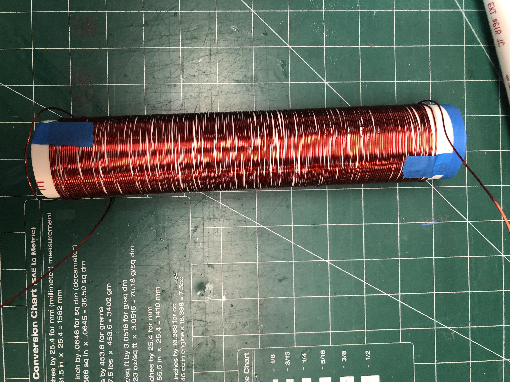
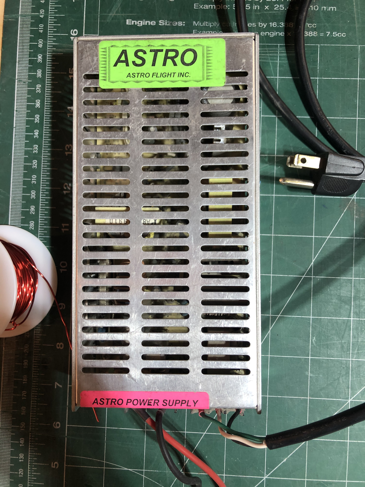

First Attempts at Creating a Magnet
Our first attempts at creating a permanent magnet had fewer anachronisms compared to our later attempts, save for a few details in order to better our chances. The basic premise was to use charcoal heat up iron to the Curie temperature. The Curie temperature is the temperature at which a material loses all magnetic properties. However, it is also the temperature at which it is possible to add magnetic properties to that same material by inducing a magnetic field. Our plan was to induce this magnetic field by placing the iron inside a solenoid as it cooled. For iron, the Curie temperature around 770 degrees Celsius.. Charcoal burns at at around 1100 degrees Celsius so achieving the Curie temperature of iron with this method is theoretically possible! Hammering on the metal as it cools also helps the atoms realign to the magnetic field of the environment.
Materials
Knowing this basic property of heating iron to its Curie temperature to induce permanent magnetization, we bought the following materials:
- An abundance of charcoal
- 2 Low-carbon steel bars
- Rebar (for practicing before moving onto the iron bars)
- Magnet wire (for the solenoid)
- PVC pipe (also for the solenoid)
In addition to this, we had a few items already at our disposal:
- Fire pit (for the charcoal fire)
- 13 volt power supply (to power our solenoid)
Method for Reaching Curie Temperature
TODO: talk about what we were looking for visually that indicated that the flames were hot enough. Talk about the methods we used for giving the fire oxygen (blowing into it with those tubes and fanning it with that big piece of plastic.) Maybe talk about that YouTube video about making charcoal fires. Maybe mention the gasoline. We can have the video of you starting the fire here.
Method for Magnetization
After we thought we had heated up our piece of metal to the Curie temperature, the next step was to let the metal cool in a magnetic field. While the Earth's magnetic field is, of course, readily available, we wanted to improve our chances of success by creating a stronger, induced magnetic field using a solenoid. A solenoid that is long enough approximates a nearly uniform electromagnetic field in the center. We built our solenoid out of a segment of PVC pipe and magnet wire.
We ran a 13 volt current through our solenoid using a power supply we had on hand. We were surprised by just how strong of a magnetic field our solenoid induced!
Since our plan was to let the metal cool inside the solenoid after reaching the Curie temperature, we had concerns about keeping the hot metal stable inside the magnetic field. PVC pipe melts at around 260 degrees Celsius depending on the makeup of the plastic. In order to prevent our plastic solenoid from melting too quickly, we planned accordingly. One of us would hold the solenoid vertically on top of an anvil, while keeping the heated metal at the center of the solenoid. This would be done with the aid of heat-resistant gloves and a large adjustable wrench. The solenoid, being magnetized, would pull the metal away from the center and toward the edge, so this was an important task. While one person kept the pieces of our magnetization rig fixed in place, the other would use a hammer to repeatedly strike the magnet as it was cooling. Then, we would leave the metal resting on a bed of bricks until it was cool enough to handle.
Results
We attempted this process four times over the course of two separate days. The first two attempts were performed with short sections of rebar before moving onto the more expensive bars of low carbon steel.
Our first attempt with the rebar was more successful than our second attempt. We were able to hammer the hot metal inside the magnetic field created by the solenoid for a longer period of time. However, by our second attempt, the solenoid was already beginning to wear from the heat radiating off of the metal. We had to abort our second attempt prematurely; the entire solenoid started to bend as the PVC piping lost its structural integrity. Because we destroyed our first solenoid, we had to wind a new one for our future attempts. We let the metal cool overnight. After some testing, it was clear that neither piece of rebar gained any magnetic properties from this process.
One of the issues with rebar is that it is very difficult to discern exactly what a singular piece is made of, since it comes from crushed old cars and appliances. Therefore, we did not know precisely how ferrous the material we were working with actually was. Because of this, we had higher hopes for our low carbon steel, which we purchased from McMaster-Carr. We repeated our process with the higher-quality material. During our final attempt, the thin layer of transparent insulation on the magnet wire melted, shorting the circuit, sending off sparks. Neither of these attempts resulted in permanently (or even temporarily) magnetized metal, either.
There are many factors that could have prevented us from magnetizing the metal using our process. It is possible that we were not reaching high-enough temperatures with the charcoal fire. We attempted to gauge the temperature of the metal by using a color chart, which might not have been entirely accurate. Also, we were limited in how long we were able to keep the hot metal inside the solenoid due to the instability of our setup; it is possible that we needed to do this for longer.